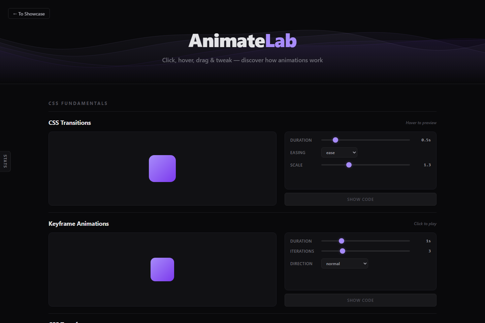

Explore motion through controls and code.
CSS, Canvas, SVG, and browser animation APIs share one hands-on playground.
Personal project / Creative learning tool

The problem
Animation techniques are often taught in isolation. AnimateLab puts multiple approaches together so visitors can change a parameter, see the motion respond, and inspect the code behind it.
How it works
Each section pairs a preview with controls and a code panel. Code generators reflect current settings; Canvas examples use animation frames, while other sections explore CSS transitions, keyframes, transforms, and SVG shapes.
A design tradeoff
Each technique has its own sandbox and controls. This makes focused experiments easy to reset and compare, while keeping the examples understandable. The tradeoff is that these are technique demonstrations rather than a complete motion editor with a shared timeline.
Look inside the code
The script contains per-section code generators, Show Code controls, Apply/Reset actions, and requestAnimationFrame loops for Canvas demonstrations.
Read script.js ↗See it working.
- Find CSS Transitions and change the duration or easing, then hover over the preview.
- Choose Show Code and compare the generated values with the controls you changed.
- Try Spring Physics: drag and release the ball, then adjust stiffness or damping to compare the response.
What this demonstrates
This build demonstrates animation APIs, real-time interface feedback, and connecting visible output to editable code.
The examples focus on individual techniques; performance depends on the effect settings, browser, and device.